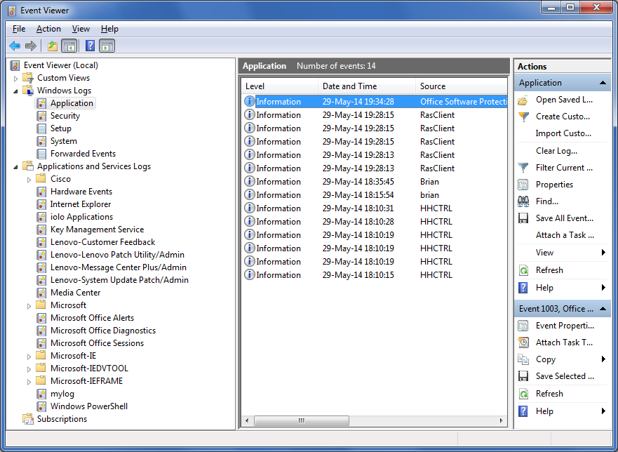

APLService Logging Events
The APLService.dws workspace contains the class SysLog which can be used to log events to the Windows Event Log. These events can be accessed programmatically or viewed using the Windows Event Viewer found in the Windows Administrative Tools.
Windows Event Log Concepts
Every message logged in the Windows Event Log has a named source. Frequently this source will be the name of the application which generates the message. Windows has multiple event log files. By default, messages will be logged in the Application log file found in the Windows Logs section of the Windows Event Viewer. Alternatively, you can create a custom log located in the Applications and Services Logs section in the Windows Event Viewer as shown by the "mylog" entry in the screenshot below. Multiple applications can use the same source and multiple sources can write to the same log file, but a given source may only write to a single log file.

Using SysLog in Your Application
Before deploying your Dyalog APL application as a service, you should:
- Consider what events or messages the application should log and their severity level. SysLog allows you to specify severity levels of Error, Warning, and Informational.
- Create the log source and optionally its custom log using SysLog.CreateEventSource. This must be done when running Dyalog as an administrator and prior to running your Dyalog service. Once the event source is created, it is not necessary to run your application as an administrator in order to write to the Windows Event Log.
- Within your application, you have two options for writing to the Windows Event Log.
- You may use the SysLog.WriteLog method. SysLog.WriteLog will verify that the log source exists and then write your message. This has the advantage of being standalone and can be called whenever you desire.
- You may create an instance of the SysLog class and use the Write method. This has the advantage of not incurring the overhead of verifying the existence of the log source each time a log message is written
SysLog Usage
SysLog implements an interface to a subset of the functionality of Microsoft's System.Diagnostics.EventLog class. Some of SysLog's methods, namely CreateEventSource, DeleteEventSource and DeleteLog, require you to run Dyalog as an administrator to be fully functional.
All of the methods in SysLog with the exception of Write are shared methods meaning you do not have to create an instance of SysLog in order to execute them.
| SysLog.CreateEventSource sourcename {logname} |
Purpose:
Creates a new Windows Event Log source and optionally specifies or creates a Windows Event Log for the source.
| Argument | Description |
|---|
| sourcename | character vector source name that does not already exist |
| {logname} | optional character vector log name with which to associate the source name. If not supplied, the source will be associated with the Windows Logs/Application log. If there is no log named logname, it will be created. |
| {level} SysLog.WriteLog sourcename message |
Purpose:
Writes a message to the Windows Event Log associated with sourcename, optionally specifying a severity level.
| Argument | Description |
|---|
| sourcename | character vector source name of an existing source |
| message | character vector message to write to the log |
| {level} | optional singleton indicating the severity level of the message; defaults to informational if level is not specified: | 1,'E' or 'e' | may be used for error messages | | 2,'W' or 'w' | may be used for warning messages | | 3,'I' or 'i' | may be used for informational messages
|
|
| {level} instance.Write message |
Purpose:
Writes a message to the Windows Event Log associated with source name specified for the SysLog instance, optionally specifying a severity level.
| Argument | Description |
|---|
| sourcename | character vector source name of an existing source |
| message | character vector message to write to the log |
| {level} | optional singleton indicating the severity level of the message; defaults to informational if level is not specified: | 1,'E' or 'e' | may be used for error messages | | 2,'W' or 'w' | may be used for warning messages | | 3,'I' or 'i' | may be used for informational messages
|
|
Example:
logger←⎕NEW SysLog 'mysource'
1 logger.Write 'The sky is falling!'| Boolean←SysLog.LogExists logname |
Purpose:
Returns 1 if a Windows Event Log named logname exists, 0 otherwise.
| Argument | Description |
|---|
| logname | character vector Windows Event Log log name |
| Boolean←SysLog.EventSourceExists sourcename |
Purpose:
Returns 1 if a Windows Event Log source named sourcename exists, 0 otherwise.
| Argument | Description |
|---|
| sourcename | character vector Windows Event Log source name |
| logname←LogNameFromSourceName sourcename |
Purpose:
Returns the Windows Event Log log name associated with the source named sourcename.
| Argument | Description |
|---|
| sourcename | character vector Windows Event Log source name |
| logname | character vector Windows Event Log log name |
| DeleteEventSource sourcename |
Purpose:
Deletes the Windows Event Log source named sourcename.
| Argument | Description |
|---|
| sourcename | character vector Windows Event Log source name |
Purpose:
Deletes the Windows Event Log log named logname.
| Argument | Description |
|---|
| logname | character vector Windows Event Log log name |